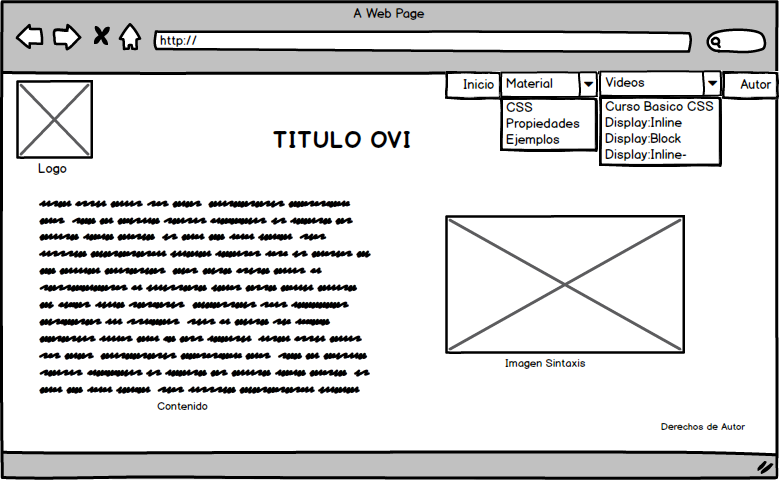

La empresa HtmlDesign, está especializada en el diseño de objetos virtuales de aprendizaje y a raíz de la pandemia COVID-19 la educación virtual se ha vuelto tema obligatorio. Por lo cual la Universidad UNAD, requiere de recursos que permitan dinamizar las estrategias de aprendizaje. La compañia HtmlDesing propone implementar: Objetos Virtuales de Aprendizaje (OVA) y Objetos Virtuales de Información (OVI), relacionadas con las propiedades báscias de CSS.
PRINCIPAL
ESPECÍFICOS
La empresa HtmlDesign obtiene el material informativo empleando directamente el servicio de Internet en diferentes portales web. Los cuales brindan tutoriales de lenguaje de estilos CSS3. A continuación se relacionan las principales fuentes de información:
CSS(Cascade Style Sheets), en español Hojas de Estilo en Cascada, el cual permite dar estilo al sitio elaborado con código HTML. Su última versión es CSS3, la cual presenta como principales características mayor control sobre el estilo de los elementos de la página web y a su vez mayor número de efectos visuales. Las ventajas del uso de CSS son:
Y la principal desventaja de CSS3 es que no tiene 100% compatibilidad con ningún navegador, por lo cual se sugiere ir implementando el código e ir validando los cambios en los principales navegadores como Firefox y Chrome. Normalmente los temas que se abordan en el estudio de CSS son: Pseudo Elementos, Pseudo Clases, efectos de texto y tipograficas, color, efectos de borde, propiedades de fondo, efectos de sombra y brillo, transformaciones, transiciones, animaciones, así como propiedades de visualización o Display, la cual vamos a profundizar en el presente OVI.
La propiedad Display de CSS establece los tipos de visualización de un determinado elemento. Y para ello se hace uso de los principales valores o atributos tales como inline, block e inline-block. La propiedad Display permite establecer el tipo de caja a generar para cada elemento. Los dos valores más utilizados son block e inline que hacen que la caja de un elemento sea de bloque o en línea respectivamente. La propiedad inline-block facilita crear cajas que son de bloque y en línea de forma simultánea. Los diferentes tipos de cajas corresponden a diferentes tipos de contenido (texto, listas, tablas).
MOCKUP OVI - PROPIEDADES BASICAS DE CSS, Display.
Se plantea el siguiente diseño o Mockup para la pagina principal del Objeto virtual de aprendizaje (OVI) para la temática: Propiedades básicas de CSS, Display: inline, block, inline-block.
